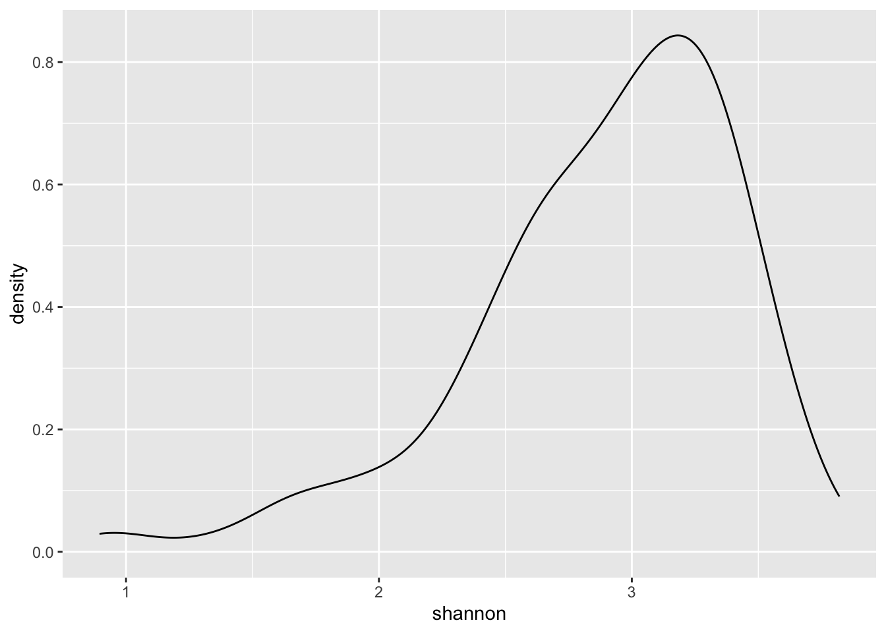
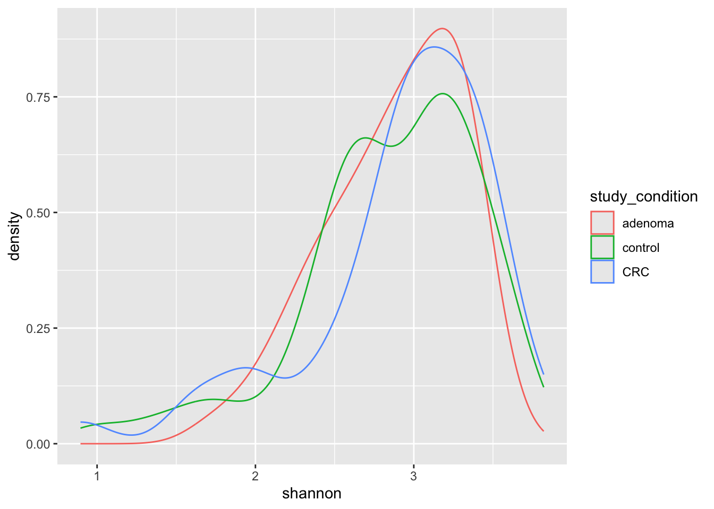

# Install the mia package
BiocManager::install("microbiome/mia")11 Microbiome analysis
The human microbiome is a complex ecosystem of bacteria, viruses, fungi, and other microorganisms that live in and on the human body. These microorganisms play a crucial role in human health and disease, influencing everything from digestion and metabolism to immune function and mental health.
In this chapter, we will assume that the data has already been processed and cleaned, and we will focus on analyzing the microbiome data using R. At a high level, we will
- Load the microbiome data into R
- Calculate and visualize alpha diversity indices
- Calculate and visualize beta diversity indices
11.1 Loading the data
Before we can start analyzing the microbiome data, we need to load the data into R. The data is typically stored in a tabular format after quantification of microbial abundances in different samples. In this case, we will use a dataset built into the mia package. The mia package provides a collection of microbiome datasets for educational purposes and includes functions for processing and analyzing microbiome data.
To load the data, we first need to install and load the mia package. If you haven’t installed the mia package yet, you can do so using the following command:
Note
Note: The mia package is part of the Bioconductor project, but in this case, we are installing it directly from GitHub using the microbiome/mia repository. This is a common practice when working with development versions of packages or with packages that are not yet available on Bioconductor.
Once the mia package is installed, you can load it into your R session using the following command:
Now that the mia package is loaded, we can load the microbiome dataset that we will be working with.
We will be using the curatedMetagenomicData package to load the FengQ_2015 dataset. This dataset contains microbiome data from a study by Feng et al. (2015). The curatedMetagenomicData package provides a convenient interface for accessing microbiome datasets that have been pre-processed and curated for analysis.
Ignore the details of the code for now, but suffice it to say that what the code will do for us is to load a dataset for downstream analysis.
# Load the FengQ_2015 dataset
library(curatedMetagenomicData)
tse <- curatedMetagenomicData("FengQ_2015.relative_abundance", dryrun = FALSE, rownames = "short")[[1]]Cannot connect to ExperimentHub server, using 'localHub=TRUE' insteadUsing 'localHub=TRUE'
If offline, please also see BiocManager vignette section on offline use
$`2021-03-31.FengQ_2015.relative_abundance`
dropping rows without rowTree matches:
k__Bacteria|p__Actinobacteria|c__Coriobacteriia|o__Coriobacteriales|f__Atopobiaceae|g__Olsenella|s__Olsenella_profusa
k__Bacteria|p__Actinobacteria|c__Coriobacteriia|o__Coriobacteriales|f__Coriobacteriaceae|g__Collinsella|s__Collinsella_stercoris
k__Bacteria|p__Actinobacteria|c__Coriobacteriia|o__Coriobacteriales|f__Coriobacteriaceae|g__Enorma|s__[Collinsella]_massiliensis
k__Bacteria|p__Firmicutes|c__Bacilli|o__Bacillales|f__Bacillales_unclassified|g__Gemella|s__Gemella_bergeri
k__Bacteria|p__Firmicutes|c__Bacilli|o__Lactobacillales|f__Carnobacteriaceae|g__Granulicatella|s__Granulicatella_elegans
k__Bacteria|p__Firmicutes|c__Clostridia|o__Clostridiales|f__Ruminococcaceae|g__Ruminococcus|s__Ruminococcus_champanellensis
k__Bacteria|p__Firmicutes|c__Erysipelotrichia|o__Erysipelotrichales|f__Erysipelotrichaceae|g__Bulleidia|s__Bulleidia_extructa
k__Bacteria|p__Proteobacteria|c__Betaproteobacteria|o__Burkholderiales|f__Sutterellaceae|g__Sutterella|s__Sutterella_parvirubra
k__Bacteria|p__Synergistetes|c__Synergistia|o__Synergistales|f__Synergistaceae|g__Cloacibacillus|s__Cloacibacillus_evryensis
Tip
If you are working with your own microbiome data, you will often need to load it into R using functions like read.csv() or read.table() to read tabular data files. Make sure your data is properly formatted and cleaned before loading it into R for analysis.
11.2 Exploring the data
Once the data is loaded into R, we can start exploring the data to understand its structure and contents. The tse object is a TreeSummarizedExperiment object, which is a specialized data structure for storing microbiome data in R. We can use various functions to explore the data stored in the tse object.
To get an overview of the data, we can simply type the name of the object in the R console:
# Print the object
tseclass: TreeSummarizedExperiment
dim: 601 154
metadata(1): agglomerated_by_rank
assays(1): relative_abundance
rownames(601): [Bacteroides] pectinophilus [Butyribacterium]
methylotrophicum ... Weissella cibaria Weissella viridescens
rowData names(7): superkingdom phylum ... genus species
colnames(154): SID31004 SID31009 ... SID532832 SID532915
colData names(28): study_name subject_id ... ldl hba1c
reducedDimNames(0):
mainExpName: NULL
altExpNames(0):
rowLinks: a LinkDataFrame (601 rows)
rowTree: 1 phylo tree(s) (10430 leaves)
colLinks: NULL
colTree: NULLNote that the output of the tse object will show you the dimensions of the data, the metadata associated with the samples and features, etc. However, the data themselves are not printed to the console due to the large size of the dataset. The TreeSummarizedExperiment object is a complex data structure that contains multiple components, including the abundance data, sample information, feature information, and other metadata.
The sample information is stored in the colData slot of the Tito2024QMP object. You can access the sample information using the colData() function:
# Access the sample information
colData(tse)DataFrame with 154 rows and 28 columns
study_name subject_id body_site antibiotics_current_use
<character> <character> <character> <character>
SID31004 FengQ_2015 SID31004 stool no
SID31009 FengQ_2015 SID31009 stool no
SID31021 FengQ_2015 SID31021 stool no
SID31030 FengQ_2015 SID31030 stool no
SID31071 FengQ_2015 SID31071 stool no
... ... ... ... ...
SID532796 FengQ_2015 SID532796 stool no
SID532802 FengQ_2015 SID532802 stool no
SID532826 FengQ_2015 SID532826 stool no
SID532832 FengQ_2015 SID532832 stool no
SID532915 FengQ_2015 SID532915 stool no
study_condition disease age age_category
<character> <character> <integer> <character>
SID31004 CRC CRC;fatty_liver;hype.. 64 adult
SID31009 control fatty_liver;hyperten.. 68 senior
SID31021 control healthy 60 adult
SID31030 adenoma adenoma;fatty_liver;.. 70 senior
SID31071 control fatty_liver 68 senior
... ... ... ... ...
SID532796 control fatty_liver;hyperten.. 73 senior
SID532802 control healthy 68 senior
SID532826 control T2D;fatty_liver;hype.. 78 senior
SID532832 adenoma adenoma;fatty_liver;.. 68 senior
SID532915 control healthy 43 adult
gender country non_westernized sequencing_platform
<character> <character> <character> <character>
SID31004 male AUT no IlluminaHiSeq
SID31009 male AUT no IlluminaHiSeq
SID31021 female AUT no IlluminaHiSeq
SID31030 male AUT no IlluminaHiSeq
SID31071 male AUT no IlluminaHiSeq
... ... ... ... ...
SID532796 female AUT no IlluminaHiSeq
SID532802 male AUT no IlluminaHiSeq
SID532826 male AUT no IlluminaHiSeq
SID532832 female AUT no IlluminaHiSeq
SID532915 female AUT no IlluminaHiSeq
DNA_extraction_kit PMID number_reads number_bases
<character> <character> <integer> <numeric>
SID31004 MoBio 25758642 40898340 3649611221
SID31009 MoBio 25758642 66107961 6196998053
SID31021 MoBio 25758642 60789126 5708593447
SID31030 MoBio 25758642 50300253 4741158330
SID31071 MoBio 25758642 51945426 4913627034
... ... ... ... ...
SID532796 MoBio 25758642 50845712 4754848864
SID532802 MoBio 25758642 41480415 3868696049
SID532826 MoBio 25758642 35346002 3348368467
SID532832 MoBio 25758642 42184599 3951224696
SID532915 MoBio 25758642 51594677 4886998833
minimum_read_length median_read_length NCBI_accession
<integer> <integer> <character>
SID31004 30 93 ERR688505;ERR688358
SID31009 30 96 ERR688506;ERR688359
SID31021 30 96 ERR688507;ERR688360
SID31030 30 96 ERR688508;ERR688361
SID31071 30 97 ERR688509;ERR688362
... ... ... ...
SID532796 30 95 ERR710428;ERR710419
SID532802 30 96 ERR710429;ERR710420
SID532826 30 97 ERR710430;ERR710421
SID532832 30 96 ERR710431;ERR710422
SID532915 30 96 ERR710432;ERR710423
curator BMI diet disease_subtype
<character> <numeric> <character> <character>
SID31004 Paolo_Manghi;Marisa_.. 29.35 vegetarian carcinoma
SID31009 Paolo_Manghi;Marisa_.. 32.00 omnivore NA
SID31021 Paolo_Manghi;Marisa_.. 22.10 omnivore NA
SID31030 Paolo_Manghi;Marisa_.. 34.11 omnivore advancedadenoma
SID31071 Paolo_Manghi;Marisa_.. 23.45 omnivore NA
... ... ... ... ...
SID532796 Paolo_Manghi;Marisa_.. 26.56 omnivore NA
SID532802 Paolo_Manghi;Marisa_.. 23.53 omnivore NA
SID532826 Paolo_Manghi;Marisa_.. 31.22 omnivore NA
SID532832 Paolo_Manghi;Marisa_.. 27.55 omnivore advancedadenoma
SID532915 Paolo_Manghi;Marisa_.. 22.65 omnivore NA
tnm triglycerides hdl ldl hba1c
<character> <numeric> <numeric> <numeric> <numeric>
SID31004 t1n0m0 172 28 92 5.2
SID31009 NA 101 50 157 NA
SID31021 NA 53 60 122 NA
SID31030 NA 89 74 146 NA
SID31071 NA 258 40 231 NA
... ... ... ... ... ...
SID532796 NA 100 61 114 5.4
SID532802 NA 80 67 158 5.8
SID532826 NA 212 32 90 6.9
SID532832 NA 141 51 184 5.6
SID532915 NA 51 80 132 5.1As you can see, there is a lot of information stored in the colData slot, including sample IDs, study conditions, and other metadata associated with the samples. This information is essential for understanding the context of the microbiome data and for performing downstream analyses.
11.3 Community indices
In the field of microbiome ecology several indices to describe samples and community of samples are available. In this vignette we just want to give a very brief introduction.
Functions for calculating alpha and beta diversity indices are available. Using addAlpha multiple diversity indices are calculated by default and results are stored automatically in colData. Selected indices can be calculated individually by setting index = "shannon" for example.
[1] "study_name" "subject_id"
[3] "body_site" "antibiotics_current_use"
[5] "study_condition" "disease"
[7] "age" "age_category"
[9] "gender" "country"
[11] "non_westernized" "sequencing_platform"
[13] "DNA_extraction_kit" "PMID"
[15] "number_reads" "number_bases"
[17] "minimum_read_length" "median_read_length"
[19] "NCBI_accession" "curator"
[21] "BMI" "diet"
[23] "disease_subtype" "tnm"
[25] "triglycerides" "hdl"
[27] "ldl" "hba1c"
[29] "shannon" And we can look at the resulting colData() which now contains the calculated alpha diversity indices.
colData(tse)DataFrame with 154 rows and 29 columns
study_name subject_id body_site antibiotics_current_use
<character> <character> <character> <character>
SID31004 FengQ_2015 SID31004 stool no
SID31009 FengQ_2015 SID31009 stool no
SID31021 FengQ_2015 SID31021 stool no
SID31030 FengQ_2015 SID31030 stool no
SID31071 FengQ_2015 SID31071 stool no
... ... ... ... ...
SID532796 FengQ_2015 SID532796 stool no
SID532802 FengQ_2015 SID532802 stool no
SID532826 FengQ_2015 SID532826 stool no
SID532832 FengQ_2015 SID532832 stool no
SID532915 FengQ_2015 SID532915 stool no
study_condition disease age age_category
<character> <character> <integer> <character>
SID31004 CRC CRC;fatty_liver;hype.. 64 adult
SID31009 control fatty_liver;hyperten.. 68 senior
SID31021 control healthy 60 adult
SID31030 adenoma adenoma;fatty_liver;.. 70 senior
SID31071 control fatty_liver 68 senior
... ... ... ... ...
SID532796 control fatty_liver;hyperten.. 73 senior
SID532802 control healthy 68 senior
SID532826 control T2D;fatty_liver;hype.. 78 senior
SID532832 adenoma adenoma;fatty_liver;.. 68 senior
SID532915 control healthy 43 adult
gender country non_westernized sequencing_platform
<character> <character> <character> <character>
SID31004 male AUT no IlluminaHiSeq
SID31009 male AUT no IlluminaHiSeq
SID31021 female AUT no IlluminaHiSeq
SID31030 male AUT no IlluminaHiSeq
SID31071 male AUT no IlluminaHiSeq
... ... ... ... ...
SID532796 female AUT no IlluminaHiSeq
SID532802 male AUT no IlluminaHiSeq
SID532826 male AUT no IlluminaHiSeq
SID532832 female AUT no IlluminaHiSeq
SID532915 female AUT no IlluminaHiSeq
DNA_extraction_kit PMID number_reads number_bases
<character> <character> <integer> <numeric>
SID31004 MoBio 25758642 40898340 3649611221
SID31009 MoBio 25758642 66107961 6196998053
SID31021 MoBio 25758642 60789126 5708593447
SID31030 MoBio 25758642 50300253 4741158330
SID31071 MoBio 25758642 51945426 4913627034
... ... ... ... ...
SID532796 MoBio 25758642 50845712 4754848864
SID532802 MoBio 25758642 41480415 3868696049
SID532826 MoBio 25758642 35346002 3348368467
SID532832 MoBio 25758642 42184599 3951224696
SID532915 MoBio 25758642 51594677 4886998833
minimum_read_length median_read_length NCBI_accession
<integer> <integer> <character>
SID31004 30 93 ERR688505;ERR688358
SID31009 30 96 ERR688506;ERR688359
SID31021 30 96 ERR688507;ERR688360
SID31030 30 96 ERR688508;ERR688361
SID31071 30 97 ERR688509;ERR688362
... ... ... ...
SID532796 30 95 ERR710428;ERR710419
SID532802 30 96 ERR710429;ERR710420
SID532826 30 97 ERR710430;ERR710421
SID532832 30 96 ERR710431;ERR710422
SID532915 30 96 ERR710432;ERR710423
curator BMI diet disease_subtype
<character> <numeric> <character> <character>
SID31004 Paolo_Manghi;Marisa_.. 29.35 vegetarian carcinoma
SID31009 Paolo_Manghi;Marisa_.. 32.00 omnivore NA
SID31021 Paolo_Manghi;Marisa_.. 22.10 omnivore NA
SID31030 Paolo_Manghi;Marisa_.. 34.11 omnivore advancedadenoma
SID31071 Paolo_Manghi;Marisa_.. 23.45 omnivore NA
... ... ... ... ...
SID532796 Paolo_Manghi;Marisa_.. 26.56 omnivore NA
SID532802 Paolo_Manghi;Marisa_.. 23.53 omnivore NA
SID532826 Paolo_Manghi;Marisa_.. 31.22 omnivore NA
SID532832 Paolo_Manghi;Marisa_.. 27.55 omnivore advancedadenoma
SID532915 Paolo_Manghi;Marisa_.. 22.65 omnivore NA
tnm triglycerides hdl ldl hba1c shannon
<character> <numeric> <numeric> <numeric> <numeric> <numeric>
SID31004 t1n0m0 172 28 92 5.2 3.28881
SID31009 NA 101 50 157 NA 3.10400
SID31021 NA 53 60 122 NA 3.37028
SID31030 NA 89 74 146 NA 2.59465
SID31071 NA 258 40 231 NA 3.14486
... ... ... ... ... ... ...
SID532796 NA 100 61 114 5.4 3.65802
SID532802 NA 80 67 158 5.8 3.19414
SID532826 NA 212 32 90 6.9 3.15717
SID532832 NA 141 51 184 5.6 3.21046
SID532915 NA 51 80 132 5.1 3.48644colData(tse) is a DataFrame object, which is a subclass of data.frame.
Classes and subclasses in R
When we say that an object in R (or other languages) is a subclass of another object, we mean that it inherits properties and methods from the parent object. In this case, a DataFrame object inherits properties and methods from the data.frame object, but it may have additional features specific to the DataFrame class.
In practice, this means that you can use DataFrame objects in the same way you would use data.frame objects, but you may also have access to additional functionality specific to the DataFrame class.
Remember that the alpha diversity indices are calculated for each sample. We can visualize the distribution of the Shannon index across different sample groups using a histogram or a density plot as shown in Figure 11.1
# Load the ggplot2 package for visualization
library(ggplot2)
ggplot(colData(tse), aes(x = shannon)) +
geom_density()

We can also compare the alpha diversity indices between different sample groups. For example, we can compare the Shannon index between samples from different diagnosis groups (e.g., colorectal cancer, colon adenoma, and healthy controls) as shown in Figure 11.2.
ggplot(colData(tse), aes(x = shannon, color = study_condition)) +
geom_density()

Exercise: Visualize the alpha diversity index for another sample group such as age_category or gender. As a hint, what would you change in the aes() function to plot the data by a different variable?
Exercise: Examine the relationship between age and alpha diversity. You can use a scatter plot to visualize the relationship between age and the Shannon index. What will you need to change in the aes() function to plot this relationship? And what geom_ function would you use to create the scatter plot?
Beta diversity indices are used to describe inter-sample connections. Technically they are calculated as dist object and reduced dimensions can be extracted using cmdscale. This is wrapped up in the runMDS function of the scater package, but can be easily used to calculated beta diversity indices using the established functions from the vegan package or any other package using comparable inputs.
Loading required package: scuttleJSD and UniFrac are implemented in mia as well. calculateJSD can be used as a drop-in replacement in the example above (omit the method argument as well) to calculate the JSD. For calculating the UniFrac distance via calculateUniFrac either a TreeSummarizedExperiment must be used or a tree supplied via the tree argument. For more details see ?calculateJSD, ?calculateUnifrac or ?getDPCoA.
runMDS performs the decomposition. Alternatively addNMDS can also be used.
11.4 Other indices
estimateDominance and estimateEvenness implement other sample-wise indices. The function behave equivalently to estimateDiversity. For more information see the corresponding man pages.